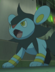

|
Delphox |
|
Delphox is the final form of Fennekin and from the Kalos region. Delphox carries a stick that it uses like a magic wand. It can use its psychic power to ensnare its enemies in fiery vortex capable of reaching 5,400 degrees Fahrenheit. Yuka Terasaki voiced Aria's Delphox. |
|  |
Luxio |
|
Luxio is a Pokemon from the Sinnoh region. It is the evolve form of Shinx. Luxio lives in small, and is able to generate powerful electricity by gathering the group's tails together. Yuka Terasaki voiced Clemont's Luxio. |
 |
Shinx |
|
Shinx is a Pokemon from the Sinnoh region. If it senses danger, its fur can gleam brightly to blind predators so it can flee. Electricity is produced by the extension and contraction odf muscles in this Pokemon forelegs. Yuka Terasaki voiced Clemont's Shinx. |